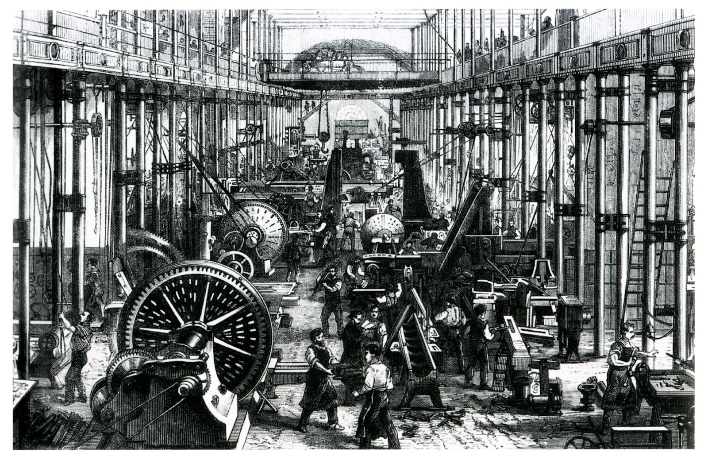
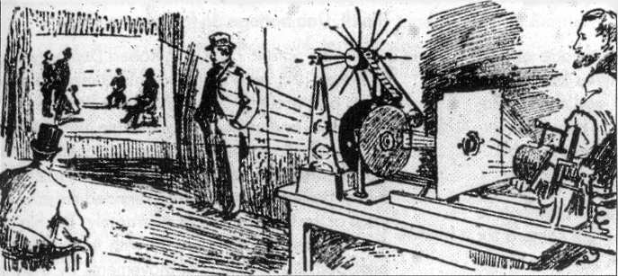
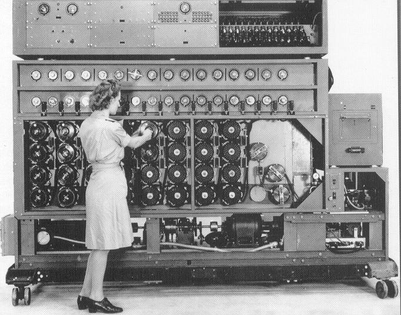
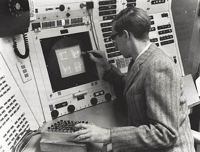
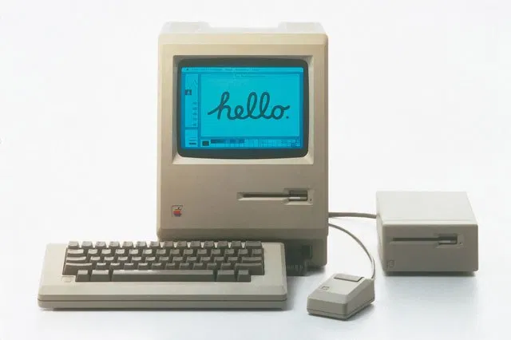
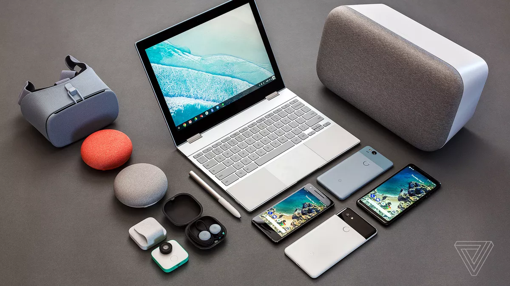
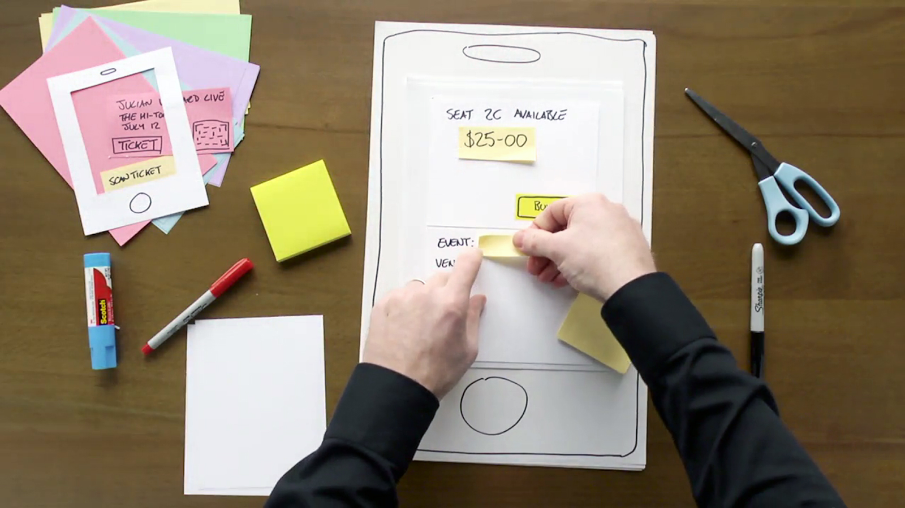
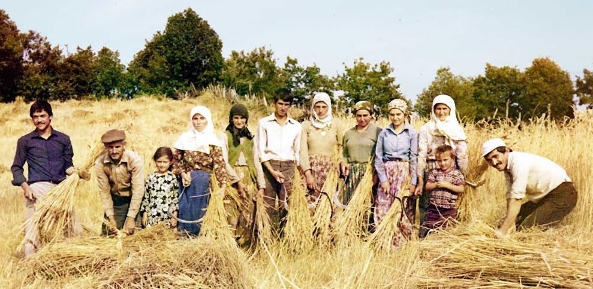
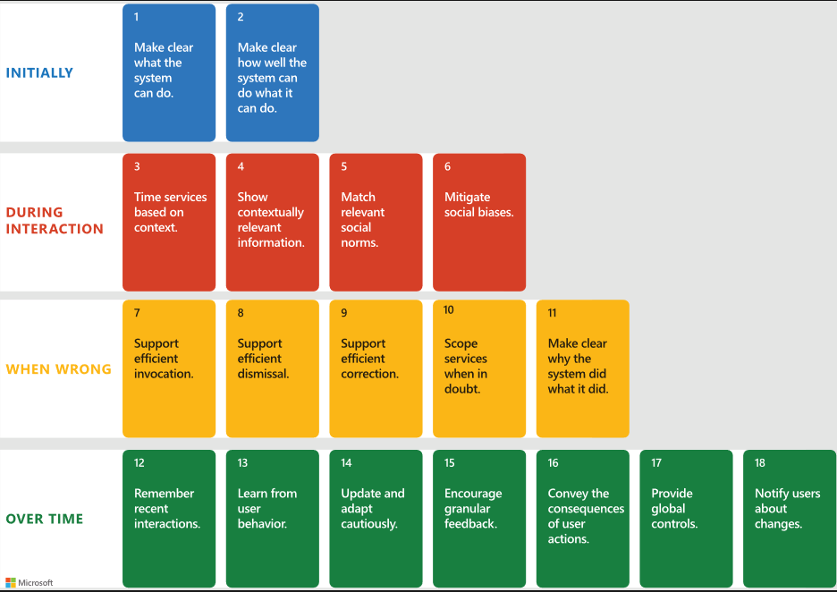

Önerilen Ders Saati: 1 saat
Teknolojinin gelişimi ile bu teknolojiyi kullanmayı sağlayan arayüzlerin gelişimi paralellik gösterir. Bu gelişimin tarihini anlatacağımız bu dersin sonunda, klavyenin nasıl evrildiğini anlatıp, ileride klavyeyi kullanan farklı uygulama alanlarının nasıl kullanılabileceğini tartışacağız.
Not: Bilgisayarların tarihi ile ilgili çok daha detaylı bir zaman çizelgesi için https://www.computerhistory.org/timeline/computers/ adresini inceleyebilirsiniz.
Bilgisayarların gelişimini anlamak ve bu süreçte nasıl zorluklarla karşılaşıldığını bilmek, ileride neler olabileceğini kestirebilmenin en iyi yollarından biridir.
Sanayi Devrimi (1700'lerin sonu - 1800'lerin başı) İnsan ile makine yaşamının giderek arttığı ve hayatımıza giren çoğu teknolojinin başlangıç noktası sayılabilecek yıllardır. Arayüzlerin tarihini çok daha öncesinden ilk tahıl dövme taşlarını çeviren tahta kolları da örnek vererek başlatabiliriz. Çünkü bu aletler de, bir işin gerçekleşmesi için bir insan ile aradaki etkileşimini gerçekleştirir. Ama sanayi devrimi, otomasyon temelli tüm teknolojilerin başlangıç noktasıdır ve bu aktivitede tartışacağımız arayüzler de otonom temelli olacaktır. |
 |
Farklı Alanlar Farklı Yaklaşımlar (1900'lerin başları) Makinelerin ve elektronik parçaların, insanların yüzyıllardır sahip olduğu her şeyin bir parçası olabileceği bizi çılgınca bir akıma sürükledi. Sanat dalları edebiyat, sinema, fen bilimleri fizik, kimya hepsi hızla teknolojiyi içine alıyor bunu kullanıyordu. |
 |
Bilgisayarlar - Aritmetik Otomasyon (1930-1960) İlk bilgisayarlar da matematiksel operasyonların otomasyonu için yapılmış bir cihazdı. O zamana kadar gelişmiş her teknoloji gibi o da insanın yapma hızının yavaş olduğu işlemleri yapmak için geliştirilmişti. Bilgisayarlar daha matematiksel ifadelerin insanlar için güç olan işlemlerini hesaplamaya yararken, MIT'li bilim insanı Vannevar Bush 1945'te bilgisayarın film, müzik gibi multimedya araçlarını depolayabilen, insanların birbirine bağlanarak haberleşmesini sağlayan bir cihaza dönüşebileceği vizyonunu yayımlamıştı. |
 |
İnsan ve Bilgisayar Arasındaki Etkileşim (1960-1980) Yine MIT'de insanların makinelerle olan etkileşimine yön verecek olan bir çizim arayüzü geliştirilmişti. Bu arayüz, bilgisayarları artık hesaplamaların otomasyonu için yapılmış cihazlar olmaktan çıkarıp, bambaşka etkileşimler sunma potansiyeline evirmişti. Ivan Sutherland SketchPad projesi ile kalem benzeri elektronik bir cihaz ile ekran üzerindeki imleci kontrol ediyor ve çizimler yapabiliyordu. |
 |
Kişisel Bilgisayarlar (1980-2000) Bilgisayarlar ile olan etkileşim her geçen gün gelişse de, bilgisayarların kişiselleşmesi ve bir ürün olarak satılmaya başlanması 1980'lerin başlarında ancak başlamıştır. Artık hepimizin duyduğu Apple, Microsoft gibi firmalar kendi bilgisayarlarını ve işletim sistemlerini duyurmaya başlamışlardır. Bu işletim sistemlerinin bir devrim niteliğinde sayılması o güne kadar yapılmamış çoklu pencereleri desteklemesi ve birçok yaratıcı işin yapılabileceği bir cihaz olarak sunulmasıydı. |
 |
Farklı Boyutta, Farklı Ortamlarda Bilgisayarlar (2000'ler) Kişisel bilgisayarlara gelen talep, bu bilgisayarlar ile büyüyen film, müzik ve oyun endüstrileri, bilgisayarların üretimi için gerekli olan ekipmanların her geçen yıl gelişmesi insanları farklı boyutlarda ve farklı ortamlarda bilgisayarın kullanılabilmesi fikrine yöneltti. Artık telefonlar, artırılmış gerçeklik cihazları, asistan cihazlar, hatta kulaklıklar da bilgisayar özelliği gösteriyor. |
 |
Önerilen Ders Saati: 4 saat
Bilgisayarları tüm insanların kullanabileceği hale getiren ve bilgisayarın bir devrim niteliğinde olmasını sağlayan en önemli unsurlardan biri geliştirilen arayüzlerin getirdiği yeniliklerdir. Arayüzler üzerine çalışan ve bu değişimi sağlayan insanların hep bir adım sonrası için sağlam vizyonları vardı. Şimdi yapacağımız etkinlik ile arayüz tasarlamanın inceliklerini ve zorluklarını göreceğiz.
Prototip oluşturmak için bilgisayarlı bir etkinlik yapmak isterseniz, Marvel App (https://marvelapp.com/ ) ya da Figma (https://www.figma.com/prototyping/ ) gibi belli bir kullanıma kadar ücretsiz prototipleme araçlarını kullanabilirsiniz.
Prototip oluştururken kullanılan düşünme süreçlerinden en bilineni "Tasarım Odaklı Düşünme" metodudur. Bu metodu uygulamak için https://dschool.stanford.edu/resources/design-thinking-bootleg adresindeki kaynakları inceleyebilirsiniz.
Prototip, tasarım sürecinde ürünün özelliklerini test etmek ve ürünün kullanıcısına nasıl bir deneyim yaşatabileceğini gözlemlemek için oluşturulan modeldir. Örneğin, bir video uygulaması yaratmak istiyoruz. Bunun için bir
Prototipleme yapmak için belli kurallar koymak gerekmez, ama aşağıdaki noktalara dikkat etmek yararlı olabilir:
Bu maddeleri uygulayabilmek için bazı yöntemleri takip etmek bize yardımcı olabilir:
Kağıt prototipler üretme: Kağıt, boyalar, yapıştırıcılar kullanarak prototipimizin en basit halini üretmek. Mesela sınıfın içindeki sıcaklığı değiştireceğimiz bir mobil uygulama hazırlamak istiyoruz. Aklımızda çeşitli tasarım seçenekleri var ancak hangisini seçeceğimizi kestiremiyoruz. O zaman önce uygulama ekranlarını içeren prototiplerimizi hazırlayıp arkadaşlarımıza kullandırabiliriz. Onların yorumlarına göre değişiklikler yaparak son ürümüzü hazırlayabiliriz.

Kişilikler oluşturma: Bazen prototipimizi test edebileceğimiz çok kişi bulamayabiliriz. Veya gerçek kişilerle bu testleri yapmak çok uzun sürebilir. Böyle durumlarda son ürünümüzü kullanabilecek kişiler üretmek bize yardımcı olabilir. Örneğin akıllı sulama projemiz için bir mobil arayüz tasarlamak istiyoruz. Ancak köye gitmek için tek bir şansımız var ve bu şansı olabildiğince iyi değerlendirmek istiyoruz. İşte tam bu aşamada önce kendi kişilerimizi hazırlayıp, onların bu prototipi nasıl kullanacağını düşünebiliriz. Diyelim ki, köyde yaşayan 54 yaşındaki Hamide Teyze, domates bahçesinin nemlilik oranına göre bir sulama düzeni kurmak istiyor. Hamide Teyze günlük hayatında hangi uygulamaları kullanıyor olabilir? Bu uygulamalarda alıştığı bir uygulama arayüzü düzeni var mı? Bu düzen bizim uygulamamızda kullanılırsa ona kullanım kolaylığı sağlar mı?

Bu örnek prototip, MIT Media Lab ile Andorra City Science Lab'in ortaklığında gerçekleşen çalışmasından çıkan ürün prototipidir. Daha detaylı açıklama için: https://www.media.mit.edu/posts/electronautes/
Sınıf içindeki nem, sıcaklık, rüzgar gibi iklim verilerini alıp, bu verilere göre camı/perdeleri kontrol eden bir sistemin arayüzünü tasarlamak için bir uygulama geliştirelim.
Şimdi ürünümüzün hangi özelliklere sahip olacağı ile başlayalım:
Sonra, şu soruları cevaplamaya çalışalım:
Bu soruları cevaplayabilmek için birkaç çeşit arayüz tasarlıyorum.
Önerilen Ders Saati: 1 saat
Öğrenciler, bu derste kullanıcı deneyimi çalışmasını deneyimleyecekler.
Tasarladığımız ürünü arkadaşlarımıza denetelim ve yorumlarını alalım. Merak ettiklerimizi ve nelerin daha iyiye gidebileceğini soralım. Örnek bir kullanıcı deneyimi çalışmasından sonra, aşağıdaki gibi yorumları üretmeyi bekleyebiliriz:
Bu kararlara göre tasarımımın ikinci versiyonunu geliştirelim.
Önerilen Ders Saati: 1 saat
Çıkan ürünü gerçeğe dönüştürmek için yapay zekaya ihtiyacımız var mı? Yapay zekayı hangi tür uygulamalarda kullanmak anlamlıdır, ne tür problemleri çözebiliriz?
Google Sesli Asistanı açmak için "Hey Google" dediniz ve asistan saniyeler içinde açıldı. Bu süreç içinde mikrofon sesi devamlı olarak ve saniyede 44000 kere alıyordu. Bu 44000 örneklem, sesin o anki yüksekliğini telefonunun hafızasına yolluyordu. Bu işlemi Scratch veya benzeri bir klasik programlama ortamında uyguladığımız yöntemler ile çözmek oldukça zordur.
Başka bir örnek verelim, elimizde oldukça fazla kedi ve köpek resmi var. Bu resimleri kameraya gösterince sınıflandırmasını istiyoruz. Bunun için bir programı nasıl oluşturabiliriz? Hangi özelliklerini göre ayırt edeceğiz ve bu özellikleri bilgisayara nasıl anlatacağız?
Yapay zekanın bir alt dalı olan makine öğrenmesi teknikleri, bu gibi problemleri çözmede oldukça başarılıdır. Verileri alıp, bu verilerden bir sonuç çıkarma ve bu sonucu önceden görmediği veriler için değerlendirebilme olanağı verir.
Bir önceki aktivitede karşımıza çıkabilecek işleri ele alalım:
Yapay zekayı ürünümüze yerleştirmek için aşağıdaki içerik kartlarından yararlanabiliriz:
https://dschool.stanford.edu/resources/i-love-algorithms
Yapay zekanın akıllı bir bina sisteminde neler olacağını göstermek için simülasyon:
https://aidemos.microsoft.com/machineteaching/smart-building
İnsan-Bilgisayar ve Yapay Zekanın etkileşiminde yıllar içinde biçimlenmiş dikkat edilmesi önemli noktalar vardır. Bu noktalar, kullandığımız arayüzlerin çok daha doğal ve kullanılabilir olmasını sağlar. Aşağıdaki diagramda bu noktaların özetini görebilirsiniz:

Microsoft'un yayınladığı bu kılavuz kartları ile dersimizde farklı örnekleri inceleyebiliriz:
Kılavuz kartlarının interaktif demosuna aşağıdaki linkten ulaşabilirsiniz:
https://aidemos.microsoft.com/guidelines-for-human-ai-interaction/demo